What GitHub is, and why it's yours
GitHub stores the files your website is built from, and hosts the site for free. Think of it as the building your site lives in. The account is in your name, so the building is yours, not mine, from the very first day.
- It's free. You won't need a paid plan or a card.
- Your site's files are public. Free hosting on GitHub requires it. That's fine: they're the same words and pictures anyone can see on your website. Nothing private ever goes in there.
- You'll rarely log in. After setup, most people visit once or twice a year, if that.
You'll need
- An email address you check regularly. GitHub sends important notices there.
- Your phone, or a password manager, for the security step.
- About 20 minutes.
You don't have to do this alone. If any step is unclear, or you'd simply rather have company, call or text me. We can also go through it together on a video call or over Messenger.
Never send me your password or security codes. I work on your site through my own account, with permission you give me. I never need your login.
Create your account
- Go to github.com and choose Sign up.
- Enter an email address you plan to keep for years, and create a strong password. Save it in your password manager if you use one.
- Choose your username carefully. It can appear in your site's backup address, so pick something tied to your author name, such as janesmithauthor or janesmithbooks. Avoid anything personal you'd rather keep private.
- GitHub asks you to solve a short puzzle to prove you're a person. If you use a screen reader, look for the audio option.
- GitHub emails you a short code. Enter it to confirm your address.
- If asked to choose a plan, choose Free. You can skip any questions about how you'll use GitHub.
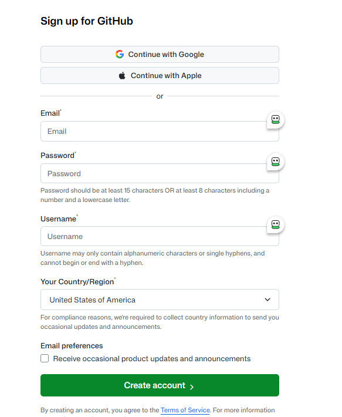
Secure it — the step that matters most
GitHub requires two-step verification: after your password, you confirm it's really you with your phone or another device. It may prompt you straight away or within a few weeks. Do it now, while this guide is open.
- Open your profile menu (your picture, top right), then Settings, then Password and authentication.
- Choose Enable two-factor authentication.
- Pick a method. Any of these is fine:
- A passkey uses your phone's or computer's fingerprint, face or PIN. It's the most secure and, for many people, the easiest.
- An authenticator app, or the GitHub Mobile app, shows a fresh code on your phone each time.
- A text message to your phone is the simplest, where GitHub offers it. GitHub marks it less secure, so choose one of the others if you can.
- GitHub then shows you a set of recovery codes. Download or copy them.
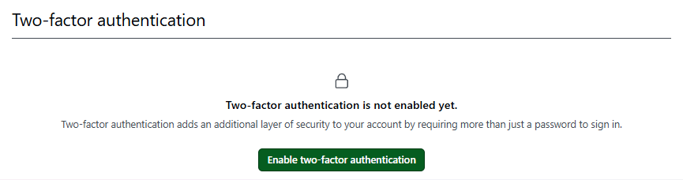
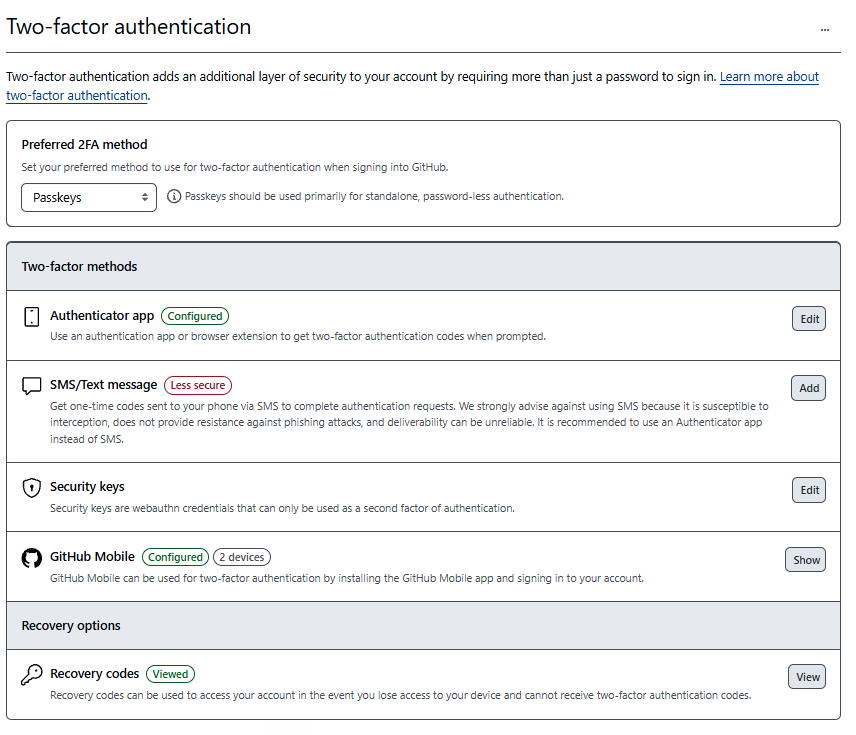
About a month later, GitHub may ask you to sign in and confirm two-step verification once more. That's normal, and it only takes a minute.
Keep your recovery codes somewhere safe and separate: your password manager, or printed and filed with important papers.
If you lose your phone and your recovery codes, GitHub may be unable to give you your account back. Neither can I. This is the one step in this guide that can't be fixed later.
Create your site's home and add me
Your site's files live in what GitHub calls a repository. Think of it as one labelled folder. You create it in your account, then give me permission to work in it, and I build your site straight into it. Nothing is handed over at the end, because it was never anywhere but yours.
Create the repository
- While signed in, choose the + in the top-right corner, then New repository.
- Owner should already show your username.
- For Repository name, type
author-website. Once your web address is connected, visitors never see this name. - Choose Public. Free hosting requires it (see Step 01).
- Tick Add a README file. This puts one small starter file in your repository, so it isn't empty. GitHub needs that before it can switch your site on in Step 05.
- Leave every other option as it is, except tick Add a README file, then choose Create repository.
- You'll land on your new repository's page, which shows the README file in a short list of files. You can ignore nearly all of it; that part's mine. Next, we'll give me access.
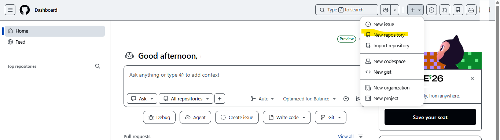
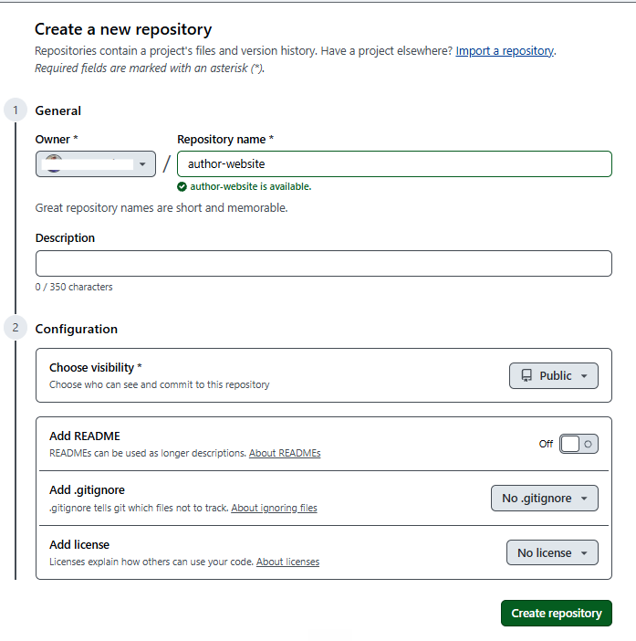
[ retake screenshot: Add a README file ticked ]
[ retake screenshot: new repository page showing the README file ]
Add me as a collaborator
A collaborator is someone you allow to change the files in one repository. It lets me build your site and, later, make the changes you ask for. You can remove me at any time, and your site keeps running.
- In your repository, choose Settings along the top (on a small screen it may be tucked under the ••• menu), then Collaborators under Access, then Add people. GitHub may ask for your password or security code again. That's normal.
- Type my email address, sketchkey@thecraftbeacon.com, select me when I appear, and confirm. If GitHub can't find me that way, try my GitHub username instead: conwatcher.
- GitHub emails me an invitation. Let me know you've sent it, and I'll accept.
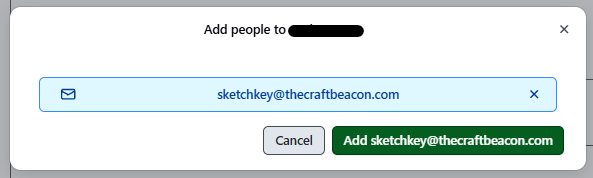
Adding me lets me change the files in this one repository, and nothing else. I can't see your password or your account settings, I can't delete the repository or make it private, and I can't touch anything else in your account.
Follow along, if you'd like to
Once I start building, your repository's page shows every change as it happens. Choose Commits (next to a small clock icon) to see a dated list of everything I've changed, each with a short note. Look as often or as rarely as you like. You never need to do anything there.
Switching on your site and connecting your web address
Once your site is built, two last things connect it to the world: switching it on in GitHub, and pointing your web address at it. Because the repository is yours, GitHub only lets you, the owner, flip these switches. It takes about half an hour, and it's the one part we usually do together.
We'll do this together, however suits you: a video call, a phone call, Messenger, or texts back and forth. The directions below are here for reference, so you can see what's coming. You don't need to work through them alone, and if you get stuck at any point, I'm a phone call or a text away.
Want to watch it take shape? Some people like to switch their site on part-way through the build, so they can look in on progress at its real address whenever they like. That's fine. Just know that anyone could come across it before it's finished, so hold off on sharing the address until we're done.
A. Prove the address is yours (on your account's Pages screen)
GitHub has two screens that are both called Pages. This part uses the one that belongs to your account. Part B uses a different one, inside your repository.
- Open your profile menu (your picture, top right), then Settings (your account's this time), then Pages in the left-hand menu. This is your account's Pages screen. You'll know you're in the right place because the page is about you: your username is shown, with menus such as Your profile, and there is no repository name at the top.
- Choose Add a domain, type your web address (for example, janesmithbooks.com), and confirm.
- GitHub's page shows two things to copy: the name (step 1 on that page, a hostname beginning
_github-pages-challenge-), which goes in the Hostname box at your registrar, and the code (step 2 on that page), which goes in the Value box. Each has a copy button beside it. Use the copy button rather than retyping the code. Leave the page open; both go in at your registrar in part C. Afterwards, come back to your account's Pages screen and choose Verify. If you leave that page, you can get back to it: open your profile menu, choose Settings, then Pages. Your address is listed under Verified domains with a red Unverified label. Choose the three dots beside it, then Continue verifying, and the same page comes back with the name and code.
[ screenshot: your account's Pages screen, showing username and account menu ]
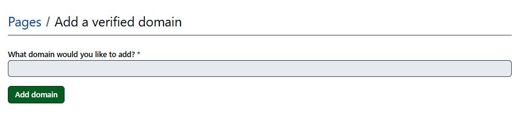
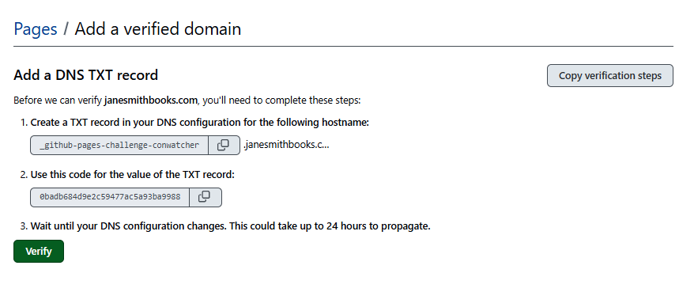
GitHub shows the name with your web address on the end. At most registrars, including VentraIP, you type only the first part: _github-pages-challenge- and your username. The registrar adds the rest itself.
Name into Hostname, code into Value. If they get swapped, GitHub can't find your record. The VentraIP guide shows a finished row so you can compare.
This step stops anyone else's GitHub site from ever using your web address.
B. Switch on your site (on your repository's Pages screen)
Leave your account menu and open your repository first (choose your profile menu, then Your repositories, then author-website), then Settings, then Pages. It's easy to land back on your account's Pages screen by mistake.
Because you ticked Add a README file in Step 04, the branch box will already offer main, and you can carry on with the steps below when we get here.
If your repository was created empty, without a README, Pages may say it is currently disabled and the branch box will read None. That just means there are no files in it yet. There's nothing wrong, and nothing for you to do until I tell you the site is built.
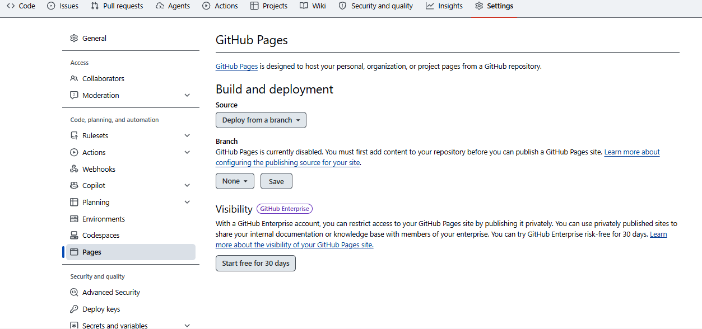
- With your repository open, choose Settings along the top, then Pages in the left-hand menu. This is your repository's Pages screen. You'll know you're in the right place because the repository's name, author-website, is at the top of the page, with the tabs Code, Issues, Pull requests and Settings beneath it.
- Under Build and deployment, set Source to Deploy from a branch. Set the branch to main, leave the folder as / (root), and choose Save.
- Under Custom domain, type your web address and choose Save. Do this before changing anything at your registrar.
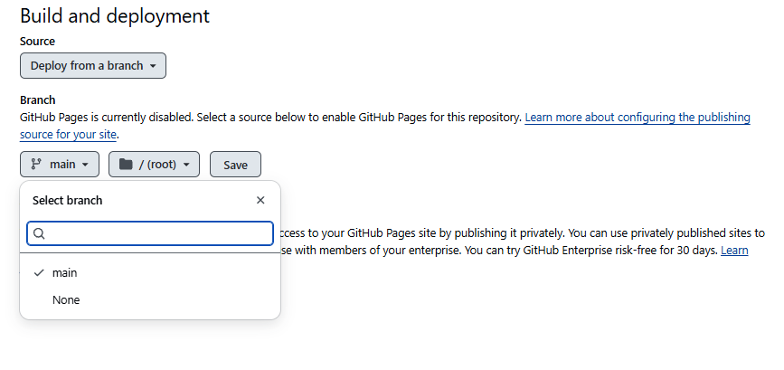
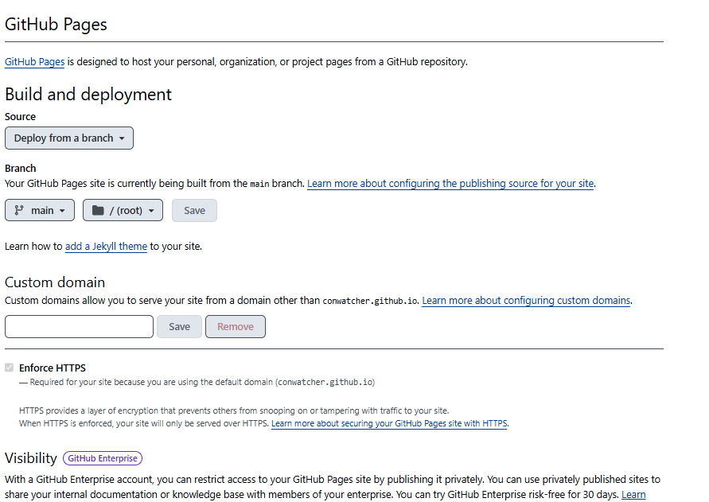
[ screenshot: your repository's Pages screen, showing the repository name and the Code / Issues / Pull requests / Settings tabs ]
Optional, if you like a moment of "this is mine": after you choose the branch and save it (step 2), give it a minute or two, then open your repository's own GitHub address, your-username.github.io/author-website. It shows whatever has been added so far, at first just a placeholder. You can do this before adding your web address, or skip it. The order of the steps above stays the same either way.
C. Point your web address at GitHub (at your registrar)
The company you bought your web address from is called a registrar. Namecheap, GoDaddy, Porkbun, Cloudflare and Fasthosts are common ones. Each registrar arranges its screens a little differently, so we'll find the right one together. Look for a section called DNS, DNS records or Manage DNS. The records themselves are the same for every site hosted on GitHub:
| Type | Name | Value |
|---|---|---|
| A | @ (blank on some registrars) | 185.199.108.153 |
| A | @ | 185.199.109.153 |
| A | @ | 185.199.110.153 |
| A | @ | 185.199.111.153 |
| CNAME | www | your-username.github.io (your GitHub username, then .github.io) |
| TXT | The name from GitHub (the first part only) | The code from GitHub (use its copy button) |
If your registrar already has records with the same Type and Name, those old ones are usually removed first. That's one reason to do this together rather than alone. Changes usually take effect within a few hours, and occasionally up to a day.
D. Turn on the padlock (back on your repository's Pages screen)
- Once your web address opens your site, go back to your repository's Pages screen (your repository, then Settings, then Pages), not your account's.
- Tick Enforce HTTPS. This gives your site the padlock in the address bar. If the box isn't available yet, it can take up to a day to appear. I'll check on it and remind you. (Until your web address is connected, the box looks ticked and greyed out. That's normal.)
What to send me
Checklist
- Your GitHub username, as soon as your account exists
- A note that two-step verification is on and your recovery codes are saved. Tell me they're saved; don't send them.
- A note that you've created the repository and added me as a collaborator using sketchkey@thecraftbeacon.com. That's everything I need to start building.
- Later, when your site is ready: a time that suits you to switch it on and connect your web address together
Text, call or email, whichever is easiest. Your username isn't private; it's how GitHub accounts find each other.
Afterwards — the very short care guide
Your site needs nothing from you to keep running: no updates, no renewals and no fees on GitHub's side. Changes go through me as they always have. Here's the short list of things that are yours to look after:
Do
- Keep your email address current in GitHub's settings. If you change email providers, update it there, or you'll miss account notices.
- Keep your recovery codes safe, and update your security method if you get a new phone.
- Read any email from GitHub about your account's security. If you're unsure whether one is genuine, forward it to me before clicking anything.
Don't
- Don't delete, rename or make the repository private. Any of these takes your site offline.
- Don't edit files directly unless we've agreed it together. It's easy to undo, but easier not to need to.
- Don't give anyone else access unless you mean to. Collaborators can change your site.
If you ever move on
Everything is already yours. To end my access, open your repository's Settings, then Collaborators, and remove me. Your site keeps running exactly as it is. Your ownership record lists everything else you'd need.